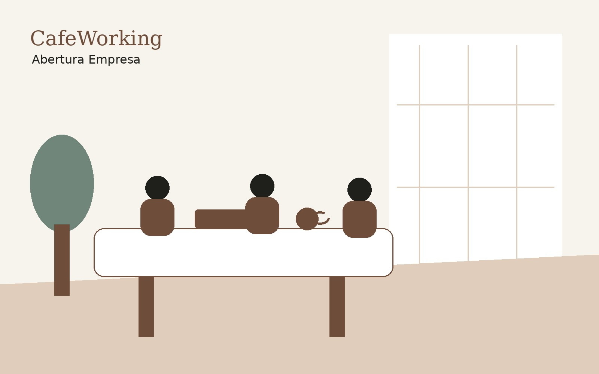

Briefing
Coletamos informações sobre atividade, cidade, sócios e faturamento.
Para quem quer formalizar um negócio sem se perder em burocracia, com orientação sobre atividade, formato e próximos passos.

Abra seu CNPJ online com orientação para MEI, ME ou LTDA, contabilidade integrada e suporte empresarial.
O objetivo é reduzir burocracia e dar ao empreendedor uma jornada mais clara, com suporte humano e tecnologia.
Coletamos informações sobre atividade, cidade, sócios e faturamento.
A equipe orienta o formato mais adequado.
São feitos os protocolos e registros necessários.
CNPJ e documentos ficam disponíveis para o cliente.
Você pode contratar online, acompanhar os próximos passos e, quando precisar, usar os ambientes do CafeWorking para reuniões, endereço e relacionamento empresarial.
“O digital escala. O ambiente físico gera confiança.”
Sim, desde que conduzido com análise correta de atividade, documentos e enquadramento.
Sim, mediante análise da atividade e disponibilidade do plano.
O prazo depende da cidade, atividade e órgãos envolvidos.
Em muitos casos sim, especialmente ME e LTDA.
Fale com a equipe CafeWorking e entenda o melhor caminho para sua empresa.
Abrir CNPJ